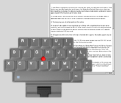

使用 TrackPoint 中心按鈕可在文件或網頁中進行捲動，或啟動可放大螢幕上項目的放大鏡。
使用 TrackPoint 中心按鈕進行捲動
使用 TrackPoint 中心按鈕啟動放大鏡
快速切換或停用 TrackPoint 中心按鈕功能
調節 TrackPoint 中心按鈕的設定
|

|
 注意： 越用力推 TrackPoint 指點桿，文件或網頁的捲動速度越快。此外，TrackPoint 捲動功能將在顯示屏上的指針下方直接捲動文件或網頁。這還可使您捲動活動應用程式視窗後的文件或網頁。
注意： 越用力推 TrackPoint 指點桿，文件或網頁的捲動速度越快。此外，TrackPoint 捲動功能將在顯示屏上的指針下方直接捲動文件或網頁。這還可使您捲動活動應用程式視窗後的文件或網頁。
|
|
 注意： 要關閉放大鏡視窗，則再次按 TrackPoint 中心按鈕一次。如果沒有再次按 TrackPoint 中心按鈕來關閉放大鏡，15 秒鐘後放大鏡將自動消失。 在放大鏡開啟的情?下，移動指針並啟動其他應用程式視窗的同時可使放大鏡的內容保持在焦點中。
注意： 要關閉放大鏡視窗，則再次按 TrackPoint 中心按鈕一次。如果沒有再次按 TrackPoint 中心按鈕來關閉放大鏡，15 秒鐘後放大鏡將自動消失。 在放大鏡開啟的情?下，移動指針並啟動其他應用程式視窗的同時可使放大鏡的內容保持在焦點中。
按住 TrackPoint 中心按鈕的同時按一下左側或右側 TrackPoint 按鈕可快速變更放大鏡視窗的內容。這可使您調節放大倍數以及調節放大鏡的大小。此功能表還可使您將放大鏡複製至剪貼簿。 此功能將複製放大鏡的內容，並可使您將它們貼上到其他位置。縮放 1 倍與自訂放大鏡大小相結合尤其適用於複製應用程式視窗的較小部分。要修改「自訂放大鏡」的大小，請參見以下調節 TrackPoint 中心按鈕的設定。
透過系統托盤中的 TrackPoint 或 UltraNav 功能表可在各 TrackPoint 中心按鈕功能之間快速切換，或停用中心按鈕功能。
- 要開啟系統托盤功能表，則在系統托盤的 TrackPoint 或 UltraNav 圖示上按一下左側。
- 切換到 TrackPoint 設定，透過選擇捲動或放大鏡，啟用要使用的中心按鈕功能。 要停用「捲動」和「放大鏡」中心按鈕功能，則選擇兩者都不。
 注意：如果在系統托盤功能表的 TrackPoint 設定內選擇捲動，則將需要選擇偏好捲動類型：標準、平滑、或自動選擇。
注意：如果在系統托盤功能表的 TrackPoint 設定內選擇捲動，則將需要選擇偏好捲動類型：標準、平滑、或自動選擇。
可在「滑鼠內容」的「TrackPoint 內容」或「UltraNav 內容」（TrackPoint 還是 UltraNav 視型號而定）面板中調節 TrackPoint 中心按鈕的設定。
- 要尋找「TrackPoint 內容」或「UltraNav 內容」面板，則開啟控制台的「滑鼠內容」，選擇「TrackPoint」或「UltraNav」標籤（視型號而定）。還可透過在 TrackPoint 系統的系統托盤功能表中選擇 TrackPoint 內容，或在 UltraNav 系統的系統托盤功能表中選擇進階設定...來直接切換到「滑鼠內容」。如果使用 UltraNav 型號，則必須按一下 TrackPoint 設定按鈕才能切換到「TrackPoint 內容」面板。
- 在「TrackPoint 內容」面板開啟的情?下，將看到選擇捲動或放大鏡功能：。 透過選擇捲動、放大鏡或兩者都不，選擇要如何使用 TrackPoint 中心按鈕。
- 要調節「捲動」功能或「放大鏡」功能的設定，則按一下設定...按鈕。
- 在「中心按鈕設定」面板中，選擇要與捲動功能一同使用的捲動類型。
- 選擇「放大鏡」功能的放大倍數和放大鏡大小。如果選擇自訂放大鏡大小，則可指定放大鏡的像素寬度和高度。
- 按一下確定可關閉「中心按鈕設定」面板。
- 按一下「TrackPoint 內容」面板上的應用可儲存變更。